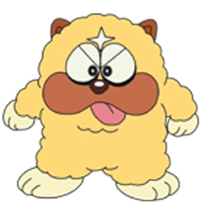

Shishimaru is a major character in Ninja Hatttori-kun. He is Hattori and Shinzo's dog. Shishimaru is a medium-sized, if not slightly plump yellow dog with brown jowls and chocolate brown ears. He also can change his shape and size, albeit only to a certain extent.
| Shishimaru | |
|---|---|
|  | |
| Occupation: | Training Ninja |
| Gender: | Male |
Eating: Maharishi has the largest appetite in the history of Ninja Oratorio-kun. Duelling: Maharishi is also a good duellist, using bones as his weapons. When provoked, he can turn into a fireball.